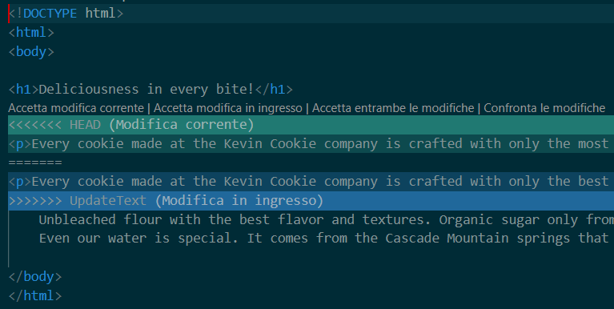
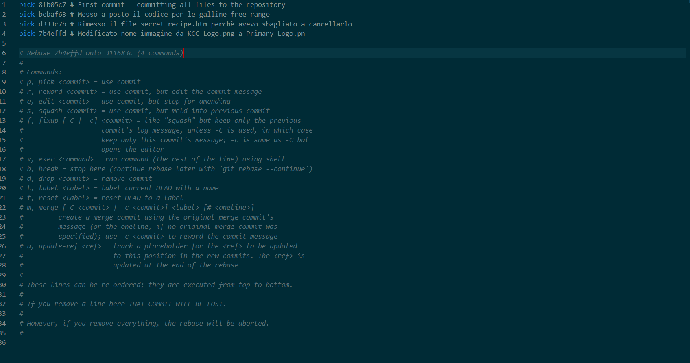

Git [[Git & GitHub]]
Comando di aiuto
git nome_comando --help
1. Preparazione (Setup) all'interno della GitBash, o qualsiasi terminale che si stia usando per Git
#Questi due comandi permettono di capire chi "FIRMA" i salvataggi
- git config --global user.name "Il tuo nome"
- git config --global user.email "la tua mail.com"
2. Iniziare un Progetto
- git init #crea una nuova repository Git locale NELLA CARTELLA IN CUI TI TROVI
- git clone HTTPS/SSHq #scarica un progetto esistente da GitHub sul tuo computer
3. **Mantenere un Progetto (Ciclo di lavoro quotidiano)
Questo è il flusso che ripeterai continuamente: Modifica → Aggiungi → Salva.
- git status
#Il comando più importante. Ti dice quali file hai modificato e cosa sta succedendo.
- git add [nome-file]
#Prepara il file per il salvataggio (lo mette nella "Staging Area").
- Trucco: git add . aggiunge tutti i file modificati in una volta sola.
- git rm --cached nome_file
#rimuove un file dalla Staging Area ma lo mantiene nella cartella locale
#si usa quando si ha aggiunto un file alla repo che non dovrebbe esserci
- git rm "nome-file"
#Cancella il file dalla repository
#Se si vuole cancellarlo definitivamente bisogna fare un git commit successivamente
- git restore "nome-file"
#Permette di recuperare il file cancellato, affinchè non sia stato già fatto il commit, recupera il file originale non modificato
--staged #permette di spostare il file dalla staging area alla working directory senza perdere le modifiche
#si usa quando si ha inserito il file nella staging area quando non si aveva ancora finito di modificarlo
- git commit -m "Messaggio descrittivo"
#Scatta l'istantanea definitiva. Il messaggio (-m) spiega cosa hai cambiato (es: "Riparato bug nel login").
--amend #con --amend dopo il messaggio sovrascrivi il commit precedente
-a #permette di skippare completamente la staging area committando direttamente
- git mv "Nome-file-vecchio" "Nome-file-nuovo"
#cambiare nome file o spostare un file tracciato registrando l'operazione direttamente nello staging
4. Sincronizzazione con GitHub
Una volta salvato sul PC, devi inviare i dati alla repo che hai collegato Vedere come collegare ----> [[Comandi di Git per collegarsi a GitHub]]
- git push
#invia i tuoi salvataggi (commit) dal computer locale a GitHub
- git fetch
#Fa vedere cosa è stato cambiato ma non aggiorna direttamente la directory in locale
#Per unire dopo aver usato fetch possiamo fare git merge
#Altrimenti per qualcosa di più diretto facciamo:
- git pull
#scarica le ultime modifiche fatte dai tuoi colleghi da GitHub al tuo PC
5. Esplorare la Cronologia (Beccare chi fa cagate)
- git log
#mostra la lista di tutti i commit fatti in passato (chi, quando e cosa)
# con -p vediamo la storia dei commit e anche cosa hanno fatto
--oneline #permette di vedere solo l'ultimo commit
- git diff
#mostra riga per riga cosa è cambiato nel file rispetto all' ultimo salvataggio
6. Rami e Sperimentazione (Branching)
Un branch è una copia del tuo main branch, ha le stesse entrate di commit nella history ma permette di lavorare ad altre cose (feature, bug fix, modifiche, ecc...) senza che il main branch venga alterato.
Una volta finiti i lavori sul branch secondario, si può fare il merge dei due branch così da integrare tutto in uno solo.
- git branch nome-ramo
#crea un ramo parallelo per testare una nuova funzione senza toccare il codice principale
- git branch
#fa vedere che branch esistono (quello con l'asterisco di fianco è quello attuale)
- git switch nome-ramo
#ti sposta da un ramo all'altro
-c #permette di switchare e creare il branch allo stesso momento
#Una volta creati i branch in locale bisogna pusharli sulla repo github
- git push -u origin nome-del-nuovo-branch
#Finchè non si entra negli altri branch con il comando git branch non li vede
#Per vedere i branch in cui non si è ancora entrati fare
- git branch -a
#oppure
git branch -r
QUANDO SI E' ALL' INTERNO DI UN BRANCH GLI AGGIORNAMENTI AI FILE NELLA WORKING DIRECTORY SARANNO SALVATI SOLO IN QUEL BRANCH, GLI ALTRI BRANCH NON SARANNO AFFETTI DAI CAMBIAMENTI. PROVARE PER CREDERE
- git merge -m "Messaggio" nome-ramo
#Unisce le modifiche del ramo secondario a quello principale (main)
#SE SI FANNO MODIFICHE ALLO STESSO FILE IN PIU' BRANCH SI CREA UN MERGE CONFLICT e darà un errore come questo:
#Auto-merging index.htm
#CONFLICT (content): Merge conflict in index.htm
#Automatic merge failed; fix conflicts and then commit the result.
#Per risolvere riapriamo il file che ha scaturito il conflict.
#Dopo averlo riaperto vedremo una roba del genere:

#COME RISOLVERE:
#Semplicemente cancellare il codice che non si vuole tenere
#Certi Text Editor (come VsCode) aiutano con i Merge come in foto
- git branch -d nome-ramo
#elimina il branch, quando si finiscono fix o modifiche per cui era stato creato il branch
7. Tornare a versioni precedenti / modificare History Commit
Comandi utili e salvaculo in caso qualcosa vada starto
- git reset codice_del_commit (si vede con git log i numeri affianco)
#permette di tornare al salvataggio di commit precedenti
- git rebase -i --root
#permette di modificare cosa appare nella history dei commit, l'ordine con cui appaiono i commit, possono essere uniti (merged) più commit e renderli un unico commit nuovo
## Come si fa? - Si manda il comando git rebase -i root che darà un immagine come questa:

Una volta al suo interno mettiamo al posto di pick squash (oppure s per abbreviare) salviamo il file, chiudiamo l'editor e tornando nella shell ci verrà chiesto il nuovo messaggio per il nuovo commit unito.
Per aggiornare anche su Github:
git push origin <nome-del-tuo-branch> --force-with-lease